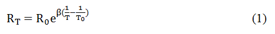
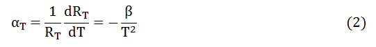
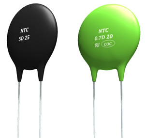
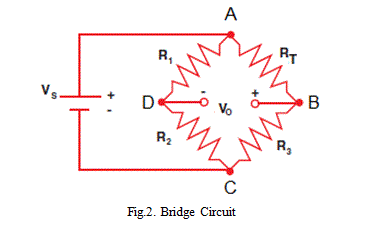
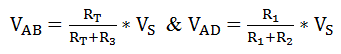
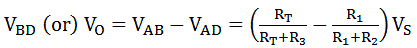
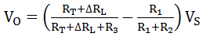

Construction of Thermistor Thermometer
Bridge Circuit Formation using Thermistor
Features of Thermistor Thermometer
Thermistor is a temperature sensitive device. If the temperature varies, then the resistance of the thermistor either increases or decreases. By using this property, we can use it as a temperature sensor. Thermistor Thermometer is a resistor type thermometers. But, it differs from RTD or resistance Temperature Detector. In thermistors, the semiconductor materials are used, while RTD has pure metals. The semiconductor materials are prepared from the oxides of chromium, cobalt, nickel, manganese, and sulphides of iron, aluminium or copper. Because of semiconductor, resistance of the thermistor varies significantly with temperature, more than the normal resistance. Thermistor thermometers have high sensitivity but it has nonlinear characteristics. This can be understood from the following example; for a typical 2000 Ω thermistor, the change in temperature at 25°C is 80Ω/°C, whereas for a 2000Ω platinum RTD, the change in temperature at 25°C is 7Ω/°C.
Types of Thermistor
Fig - 1 (a)
Thermistors are classified into two types. They are,
Negative Temperature Co-efficient Thermistors,
Positive Temperature Co-efficient Thermistors.
The fig.1(a) & fig.1(b) shows their resistance-temperature characteristics curve.
The characteristics of NTC thermistor is more common, which is shown in fig.1(a). In NTC thermistor, the resistance decreases as the temperature increases, according to the following expression.

Fig - 1 (b)
Where, RT is the resistance at temperature T (K)
R0 is the resistance at temperature T0 (K)
T0 is the reference temperature, normally 25°C
β is a constant, its value is decided by the characteristics of the material, the nominal value is taken as 4000. The people are always required that the β should be higher. If the value of β is high, then the resistor – temperature relationship will be very good. Then the sensitivity of the thermistor also increases. That means for the same raise of temperature, we can get the higher variations in the resistance. This is very good property to make any instrument with greater sensitivity.
From the expression (1), we can obtain the resistance temperature co-efficient. This is nothing but the expression for sensitivity.

It clearly shows that the αT has negative sign. That indicates the negative resistance-temperature characteristics of the NTC thermistor.
If β = 4000 K & T = 298 K, then the αT = - 0.0045/°K. This is much higher than the sensitivity of platinum RTD. So, it helps to measure the very small difference if the temperature.
However, alternative forms of heavily doped thermistors are now available (at high cost) that have a positive temperature co-efficient. The expression (1) is such that it is not possible to make a linear approximation to the curve over even a small temperature range, and hence the thermistors is very definitely a non-linear sensor.
Construction of Thermistor Thermometer
Basically in a thermistor, two or more semiconductor powders are mixed with a binder to form a slurry. After getting the slurry from the previous process, small drops of that slurry is formed over the lead wires. For drying purpose, we have to put it into a sintering furnace. During this process, that slurry (metallic oxides) will shrink onto the lead wires and it helps to make an electrical connection. Then, that processed metallic oxide is sealed by putting a glass coating on it. If we put the glass coating, it gives the water proof property to the thermistors and due to that, it improves the stability of them.
Bridge Circuit Formation using Thermistor
Now, the thermistor is an active element in bridge circuit. If we want to measure the temperature, we need to calculate the output voltage of bridge circuit and then we have to use one calibration equation to fine the actual temperature level. If the bridge is unbalanced, then we must use the calibration equation for that output voltage to find the temperature. For better calibration, we are using the voltage to frequency converter circuit which is connected across the output of the bridge. Based on the frequency and signal condition, it gives better resolution to get the temperature value. This is one of the efficient method to find temperature using thermistor.

Assume, initially the bridge is balanced, when RTR1 = R2R3. If the R1, R2 and R3 resistors are fixed value resistors, then the output voltage can be varied due to change in resistance RT. The expressions are as follows;

Now, the output voltage

This is present temperature only. But, after sometimes due to the temperature changes the thermistor resistance value will also change. So, now the new value of RT = RT + ΔRT. Here ΔRT is known as change in resistance due to temperature changes.
Now, the new output voltage

This is how the output voltage varies with change in resistance.
Features of Thermistor Thermometer
The typical size of a thermistor is 0.125mm to 1.5 mm. The useful range of temperature that we can get in thermistor is -100°C to +300°C. Commercial available thermistors have the nominal values of 1K, 2K, 10K, 20K, 100K, etc. This values indicates that the resistance value at the temperature of 25°C.
The thermistors are available in different models: bead type, rod type, disc type, etc. However, the major advantages of thermistors are their relatively low cost and their small size.
This size advantage means that the time constant of thermistors operated in sheaths is small, although the size reduction also decreases its heat dissipation capability and so makes the self-heating effect greater. This effect can permanently damage the thermistor. In consequence, thermistors have to be operated at generally lower electric current levels than resistance thermometers and so the measurement sensitivity is less.
 by
by